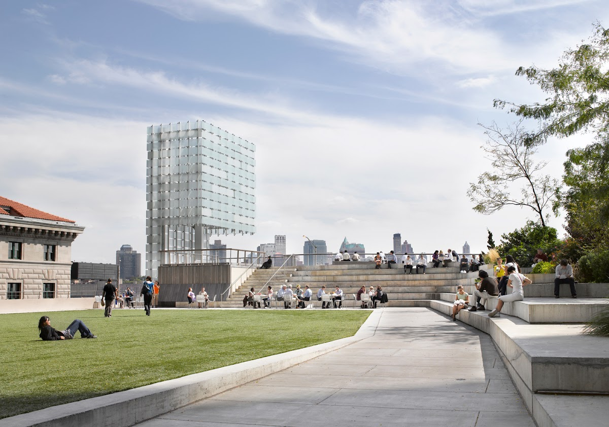
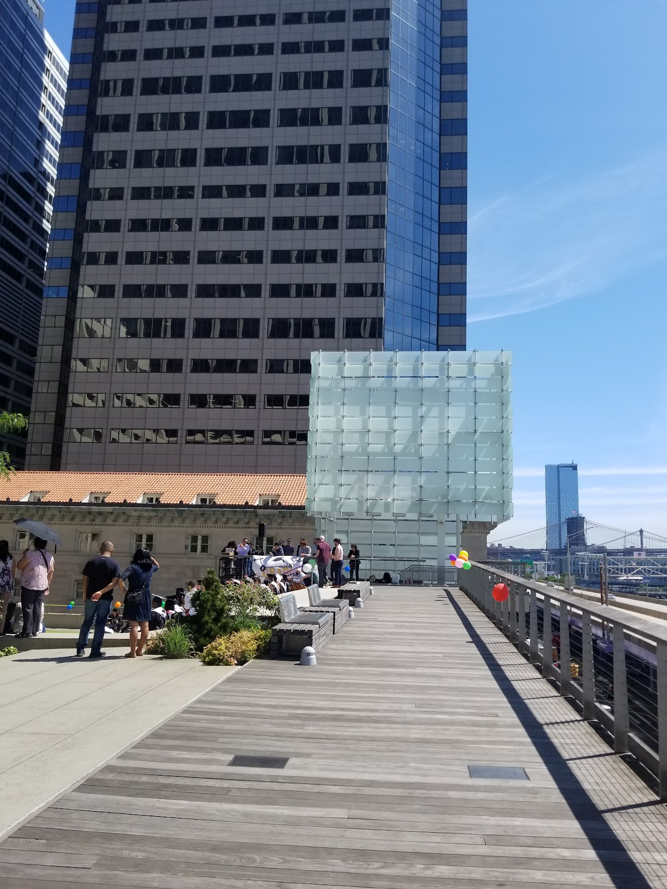
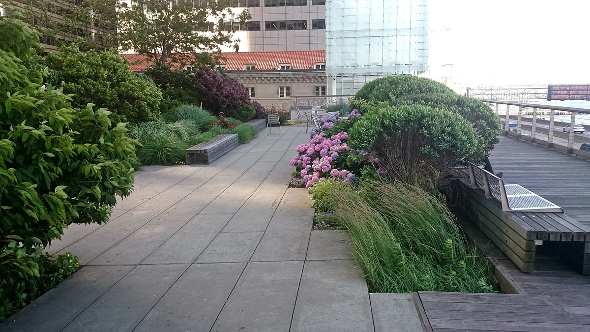
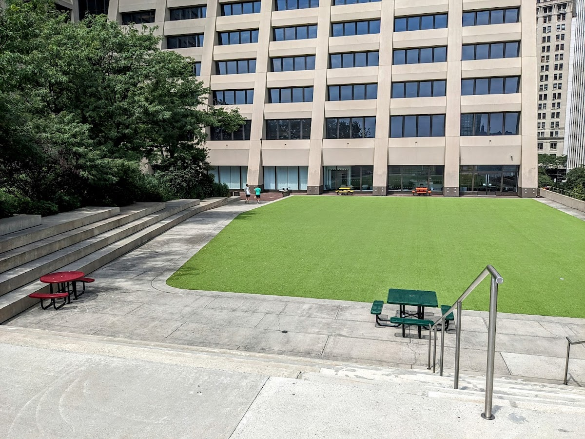
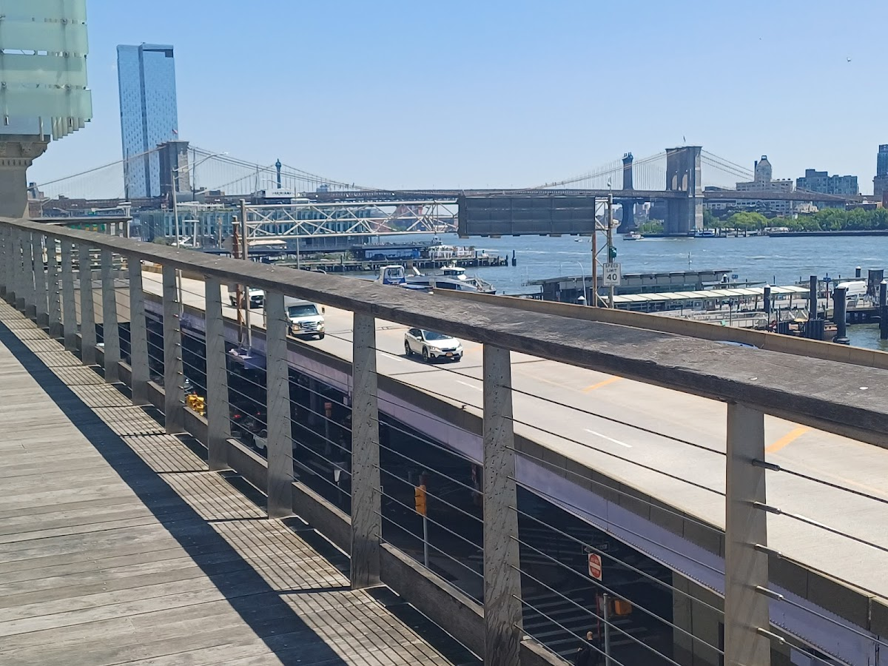

Public / private
Elevated Acre
The spiritual precurser to the highline. A one-acre elevated public park located in Manhattan's Financial District, offering green space, seating, and views of the East River.
Background
The Elevated Acre was created in the 1970s as part of the development of 55 Water Street. It was designed to provide public open space in a densely built urban area. The park underwent renovations in the early 2000s, enhancing its landscaping and accessibility. It remains a unique example of urban green space in Lower Manhattan.
Original AI-assisted background; not independently verified.
From the original map
Amazing space. Spiritual precursor to highline.
Check current access before visiting. A place on this map is not necessarily open to the public.
Nearby places
- South Bridge Towers0.5 mi ↗
- Brooklyn Bridge Parks0.7 mi ↗
- Knickerbocker Village0.8 mi ↗
- Grace Court0.8 mi ↗
Straight-line distances, not walking routes.
Discussion & corrections





40.70330, -74.00862 · Explore the surrounding area ↗